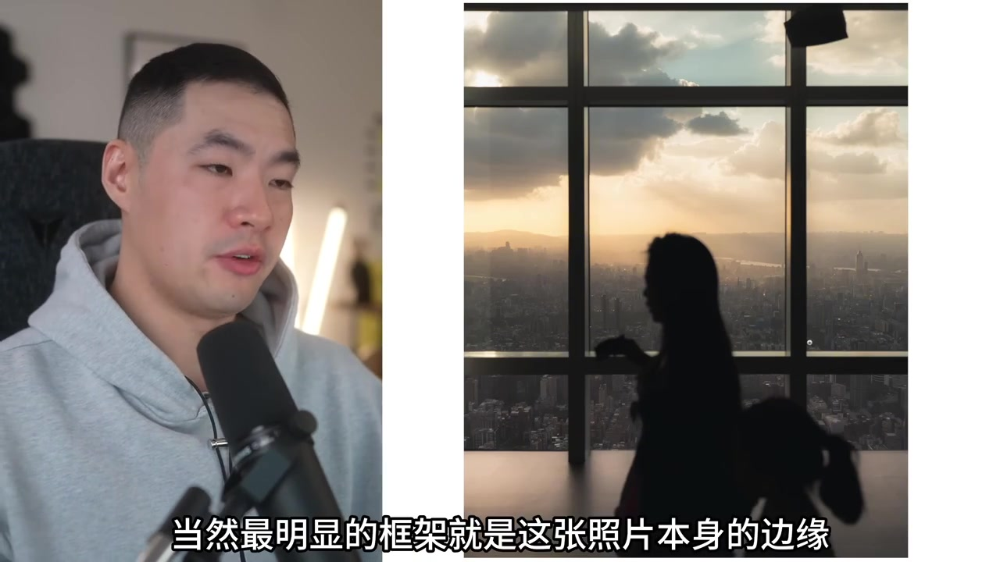
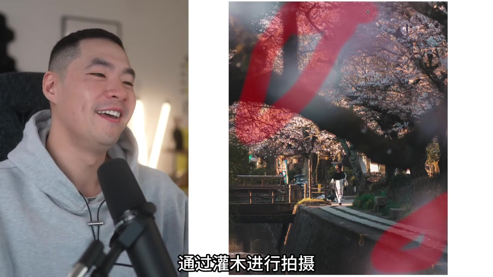
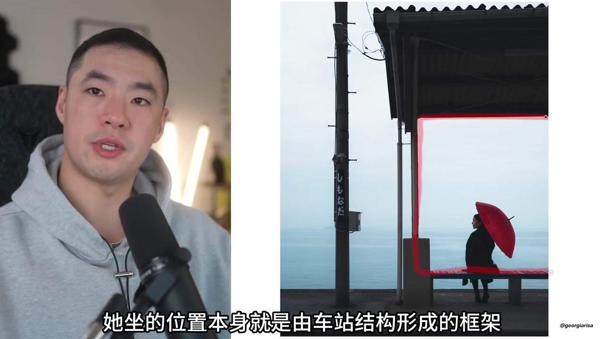
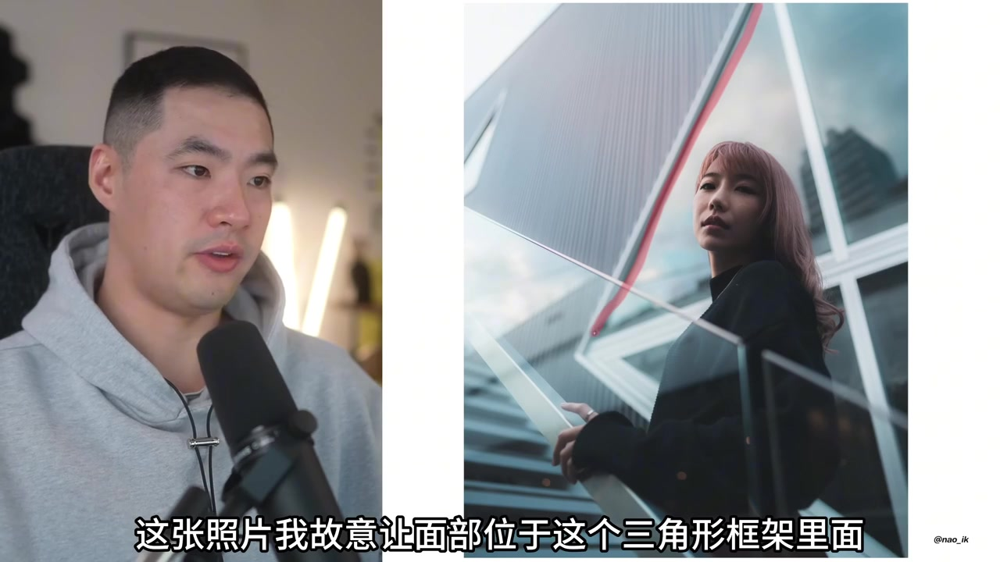
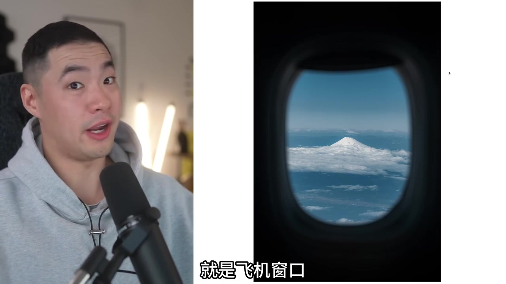
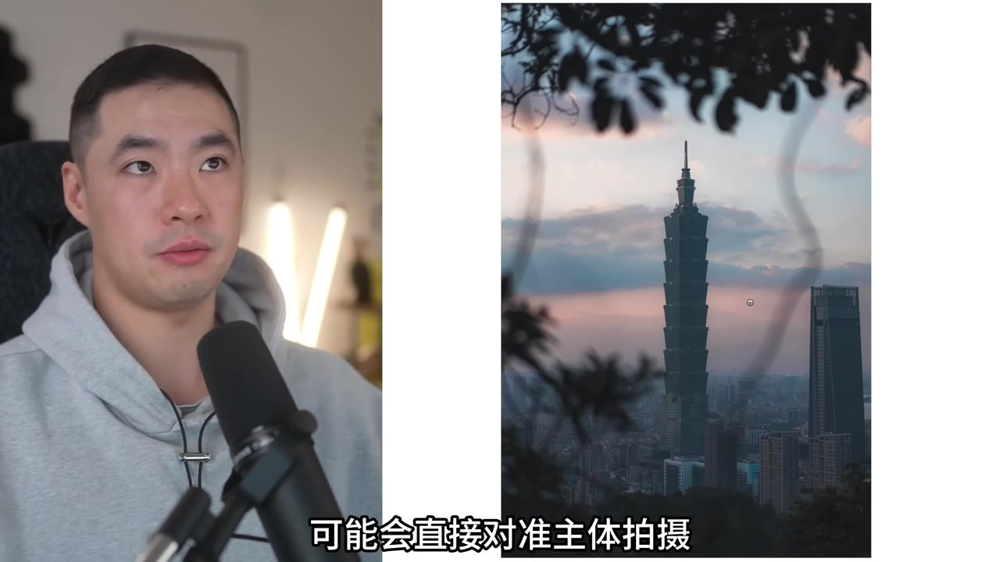

01
中文
框架把主体框起来。
EN
Framing boxes in the subject.
表达提示frame（框架）
Scene English · 框架视觉语言
Framing: Photography Visual Language, Ep.1
🎧 语音讲解
Opening: Defining Framing
情境框架是画面中天然或人造的结构，把主体框在门框、窗框、洞口里，集中视线。
框架把主体框起来。
Framing boxes in the subject.
表达提示frame（框架）
门框窗框都算。
Doors and windows count.
表达提示doorway（门框）
用frame换一种说法
用doorway换一种说法

What Framing Does
情境框架像画框一样给画面一个边界，让观众第一眼就锁定主体所在区域。
框架提供边界。
A frame gives the picture an edge.
表达提示edge（边界）
第一眼锁定主体。
Eyes lock onto the subject zone.
表达提示lock onto（锁定）
用edge换一种说法
用lock onto换一种说法

Natural Frames
情境树枝、山形、云层都是天然框架，拍摄时借景入画，不费力气就获得层次。
树枝云层是天然框。
Branches and clouds frame naturally.
表达提示natural（天然的）
借景入画有层次。
Borrowed frames add depth.
表达提示depth（层次）
用natural换一种说法
用depth换一种说法

Man-Made Frames
情境门窗、拱廊、隧道、栅栏都是人造框架，几何感强，适合街拍和建筑摄影。
拱廊隧道是人造框。
Arches and tunnels frame man-made.
表达提示arch（拱形）
几何感强适合街拍。
Strong geometry suits street shots.
表达提示street photography（街拍）
用arch换一种说法
用street photography换一种说法

Frames Tell Stories
情境框架还能暗示「偷窥」与「旁观」，透过窗户看世界，让照片多一层叙事感。
框架暗示偷窥视角。
Frames suggest a voyeur view.
表达提示voyeur（偷窥）
照片多了叙事感。
Photos gain a story layer.
表达提示narrative（叙事）
用voyeur换一种说法
用narrative换一种说法
Frame Within a Frame
情境框内框是更进阶的手法，多重框架层层递进，把视线一路引向画面深处。
框内框层层递进。
Layered frames guide the eye in.
表达提示layered（层叠的）
视线引向深处。
The gaze travels inward.
表达提示inward（向内）
用layered换一种说法
用inward换一种说法

Avoid Messy Frames
情境框架虽好但不能乱用，过于杂乱的框会抢走主体注意力，记住框架是服务主体的。
乱框抢主体注意力。
Messy frames steal attention.
表达提示clutter（杂乱）
框架服务主体。
The frame serves the subject.
表达提示serve（服务）
用clutter换一种说法
用serve换一种说法

Summary: Frame and Subject
情境框架是导演视线的手，它决定了观众先看什么，学摄影先学安排视线。
框架安排观众视线。
Frames direct the viewer's eye.
表达提示direct（引导）
先学安排视线。
Learn to arrange the gaze first.
表达提示arrange（安排）
用direct换一种说法
用arrange换一种说法
用「frame」替换表达
用「doorway」替换表达
用「edge」替换表达
用「lock onto」替换表达
用「natural」替换表达
用「depth」替换表达
用「arch」替换表达
用「street photography」替换表达
用「voyeur」替换表达
用「narrative」替换表达
用「layered」替换表达
用「inward」替换表达
用「clutter」替换表达
用「serve」替换表达
用「direct」替换表达
用「arrange」替换表达
借景入画不费力就有层次
杂乱的框会抢走主体注意力
门框窗框暗示偷窥与旁观视角